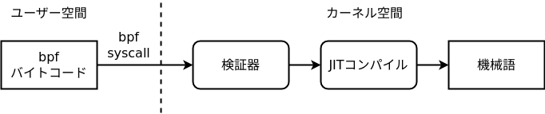

LK06 (Brahman) exploits a bug in the eBPF JIT compiler and verifier, which are features of the Linux kernel. In this chapter, we first learn about BPF and how to use it.
BPF
Before explaining eBPF, we will first explain its predecessor, BPF.
BPF's uses have expanded over time. The version with major extensions is called eBPF (extended BPF), while the original version is called cBPF (classic BPF). Current Linux uses only eBPF internally, so this site uses “BPF” for both when the distinction is unnecessary.
What is BPF?
BPF (Berkeley Packet Filter) is a RISC-style virtual machine built into the Linux kernel. It executes code supplied from user space in kernel space. Executing arbitrary code in the kernel would be dangerous, so BPF's instruction set mostly consists of safe operations and conditional branches. Because it also contains instructions whose safety cannot be guaranteed, such as memory writes and jumps, submitted bytecode is checked by the verifier. This permits only safe programs to run, including programs that cannot enter an infinite loop.
Why go to such lengths to execute user-space code in kernel space?
BPF was originally designed for packet filtering: after a user loads BPF code, it runs when a network packet arrives and can filter the packet. Today BPF is also used for execution tracing and for filtering system calls with seccomp.
BPF is now used in many places, such as packet filters and seccomp. Interpreting and emulating the bytecode every time would hurt performance, so the bytecode that passes the verifier is converted by a JIT (Just-in-Time) compiler into machine code that the CPU can execute.
A JIT compiler dynamically converts code into native machine code while a program is running. For example, when Chrome or Firefox finds a JavaScript function that is called frequently, it compiles the function to machine code and executes that code to improve performance. Whether the Linux kernel uses the BPF JIT depends on its configuration, but it is enabled by default in current kernels.
To summarize, the flow until the BPF code is executed is as follows.
- BPF bytecode is passed from user space to kernel space using the bpf system call.
- A verifier checks whether it is safe to execute the bytecode.
- If the verification is successful, the JIT compiler converts it into machine language compatible with the CPU.
- When an event occurs, the JIT-compiled machine code is called.

When an event occurs, arguments are passed according to the type of BPF you registered (that is, the event you want to inspect). These arguments are called the context. BPF processes the context and ultimately returns a single value. For example, seccomp passes the BPF program a structure containing the number of the system call about to be invoked and the architecture type. The BPF program (the seccomp filter) decides whether to allow the system call based on that information and returns its decision to the kernel. The kernel can then allow, deny, or fail the system call.

seccomp still uses cBPF, but inside the kernel it only uses eBPF, so it is converted to eBPF first. Also, seccomp has its own verification mechanism in addition to BPF's verifier.
BPF programs and user space can also exchange data through a BPF map. In BPF, a key-value associative array in kernel space is called a map.[1] We will examine maps in detail when we write an actual BPF program.
BPF architecture
Let's look at the structure of BPF in more detail. cBPF had a 32-bit architecture, but eBPF has become 64-bit in line with recent architectures, and the number of registers has also increased. This section describes the architecture of eBPF.
registers and stack
BPF programs can utilize a stack of 512 bytes. eBPF provides the following registers.
| BPF register | Corresponding x64 register |
|---|---|
| R0 | rax |
| R1 | rdi |
| R2 | rsi |
| R3 | rdx |
| R4 | rcx |
| R5 | r8 |
| R6 | rbx |
| R7 | r13 |
| R8 | r14 |
| R9 | r15 |
| R10 | rbp |
R10 Other registers can be treated as general-purpose registers in a BPF program, but there are some registers that have special meanings.
First, the context (pointer) passed from the kernel side is R1 Enter. BPF programs typically end up processing the contents of this context. For example, in the case of a socket filter, it is possible to extract packet data from the context.
and,R0 The register is used as the return value of the BPF program. Therefore, terminate the BPF program (BPF_EXIT_INSN) before doing R0 must be set to a value. The exit code has a meaning; for example, in the case of seccomp, it indicates whether to allow or deny the system call.
next,R1 from R5 is used as an argument register when calling functions in the kernel (helper functions described later) from the BPF program.
lastly,R10 is a stack frame pointer and is read-only.
instruction set
BPF programs loaded by general users can have up to 4096 instructions.[2]You can use
BPF is a RISC architecture, so all instructions are the same size. Each instruction is 64 bits, and each bit has a meaning as follows:
| bit | name | meaning |
|---|---|---|
| 0-7 | op |
opcode |
| 8-11 | dst_reg |
destination register |
| 12-15 | src_reg |
source register |
| 16-31 | off |
offset |
| 32-63 | imm |
immediate |
opcode op The first 4 bits represent the code, the next 1 bit represents the source, and the remaining 3 bits represent the class.
A class specifies the type of instruction (memory write, arithmetic, etc.). source determines whether the source operand is a register or an immediate value. The code then specifies the specific instruction number in the class.
The BPF instruction set is documented in the Linux kernel documentation.
program type
When I actually tried BPF in the previous example,BPF_PROG_TYPE_SOCKET_FILTER I specified the type. In this way, it is necessary to specify what the BPF program will be used for when loading it.
cBPF only had two types: socket filters and system call filters, but eBPF has more than 20 types.
The list of program types is defined in uapi/linux/bpf.h.
For example, BPF_PROG_TYPE_SOCKET_FILTER denotes a socket-filtering program, which can also be used with cBPF. Depending on its return value, the program can perform actions such as dropping packets. You can attach this type of program to a socket with the SO_ATTACH_BPF option of setsockopt.
The context passed to the program is an __sk_buff structure.

If we pass the Linux kernel's sk_buff structure as is, it will depend on the kernel version, so we have prepared the structure for BPF.
helper function
As briefly explained in the register section, BPF programs can call helper functions. For socket filters, four additional helpers are provided beyond the basic helpers; they are listed here.
1 | static const struct bpf_func_proto * |
The base helper function handles BPF maps.map_lookup_elem or map_update_elem and so on. Learn how to use each function while actually writing a BPF program.
Use of BPF
Now, let's actually use BPF (eBPF).
Testing on the LK06 machine requires no extra setup. On another machine, first check whether unprivileged users may use BPF. To prevent side-channel attacks such as Spectre, many systems disable it for ordinary users. Check /proc/sys/kernel/unprivileged_bpf_disabled to see whether it is enabled.
1 | $ cat /proc/sys/kernel/unprivileged_bpf_disabled |
If this value is 0 CAP_SYS_ADMIN BPF can be used even by users who do not have it. If it is 1 or 2, temporarily change it to 0.
Writing a BPF program
For complex code such as packet filters, it is common to use BCC and write in a higher-level language such as C, using a compiler. This time, however, we only need a small amount of BPF for exploitation, so we will write the bytecode directly without a compiler. “Directly” does not mean writing hexadecimal bytecode: C macros provide an assembly-like format that is easier for humans to read.
Download the bpf_insn.h header, which defines these macros, and place it in the same directory as the test C code.
First, let's run a BPF program that does nothing.
1 |
|
This code loads a BPF program (BPF_PROG_TYPE_SOCKET_FILTER). Therefore, the last write The BPF program is executed using this as a trigger.
The following part is the BPF program.
1 | struct bpf_insn insns[] = { |
This example assigns the 64-bit immediate value 4 to R0 and terminates the program. If it works properly, "Hell" should be output.
The registers will be explained in detail later, but the R0 register is used as the return value of the BPF program. this time write The reason why I only received 4 characters even though I sent 5 characters is because BPF dropped the packet. In other words, the transmitted data can be cut depending on the return value. actually,socket The manual says:
SO_ATTACH_FILTER (since Linux 2.2), SO_ATTACH_BPF (since Linux 3.19)
Attach a classic BPF (SO_ATTACH_FILTER) or an extended BPF (SO_ATTACH_BPF) program to the socket for use as a filter of incoming packets. A packet will be dropped if the filter program returns zero. If the filter program returns a nonzero value which is less than the packet’s data length, the packet will be truncated to the length returned. If the value returned by the filter is greater than or equal to the packet’s data length, the packet is allowed to proceed unmodified.
Use of BPF map
So far, we have confirmed that we can filter packets using BPF.
Next, let's use a BPF map, which is almost always used when exploiting eBPF. BPF maps are used to communicate between user space (the side that loads the BPF program) and the BPF program running in kernel space.
To create a BPF map,BPF_MAP_CREATE in bpf Call a system call. Give it at this time bpf_attr The structure is of type BPF_MAP_TYPE_ARRAY to specify the array size and key/value size. In the context of an exploit, a small key is fine, so we fix the key as an int type.
1 | int map_create(int val_size, int max_entries) { |
Array values can be updated with BPF_MAP_UPDATE_ELEM and retrieved with BPF_MAP_LOOKUP_ELEM.
1 | int map_update(int mapfd, int key, void *pval) { |
Please try the following program to see if it works. You can see that you can read and write the values of the map (in user space).
1 | unsigned long val; |
Now, let's try operating the BPF map from the BPF program side.
1 | /* Prepare BPF map */ |
This BPF program is map_update_elem Use a helper function to change the value of key 1 in the BPF map to 0x1337.
first,map_update_elem Since both the key and value are passed as pointers, prepare the key and value in memory.
1 | BPF_ST_MEM(BPF_DW, BPF_REG_FP, -0x08, 1), // key=1 |
BPF_REG_FP is R10, the stack pointer. The BPF_ST_MEM instruction used above corresponds to the following familiar x86-64 assembly:
1 | mov dword [rsp-0x08], 1 |
Next, prepare the arguments. The argument is BPF_REG_ARG1 I put them in order from R1 This is a register from.
map_update_elem The first argument is the BPF map file descriptor.BPF_LD_MAP_FD can be used to assign to a register.
1 | // arg1: mapfd |
The second and third arguments are pointers to the key and value, respectively.
1 | // arg2: key pointer |
The fourth argument is a flag, and we'll set it to 0.
1 | // arg4: flags |
lastly BPF_EMIT_CALL You can call helper functions using .
1 | BPF_EMIT_CALL(BPF_FUNC_map_update_elem), // map_update_elem(mapfd, &k, &v) |
When executed, the BPF program fires write You can see that the value of key 1 in the BPF map changes before and after the instruction.
1 | $ ./a.out |
This completes the basics of BPF. In this way, BPF programming allows you to implement packet filters by making full use of BPF maps and helper functions.
In the next chapter, we will talk about verifiers, which are the most important for BPF-related vulnerabilities.
skb_load_bytes Explore helper functions such as )(1) If the sent data contains the string "evil", drop it.
(2) If the sending data size is 4 bytes or more, change the first 4 bytes to "evil".